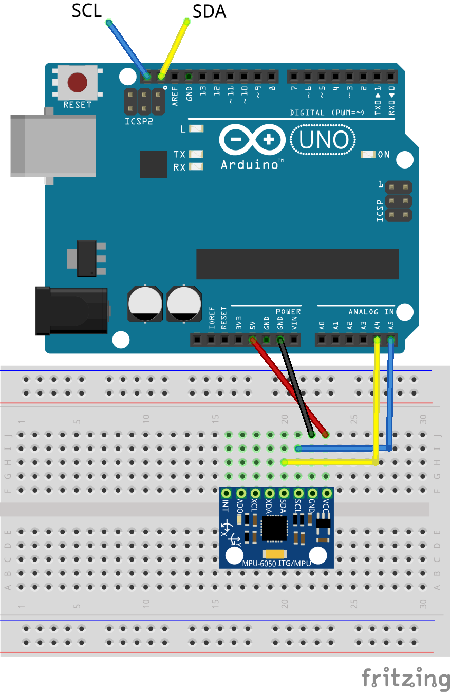

Read data from a sensor that communicates to the arduino via I2C.
The I2C sensor that we will be using is the MPU6050 which is a 3-axis accelerometer and gyroscope
I2C ("I-two-C" or "I-squared-C") is a very common protocol among microcontrollers. You will probably see it most when using the many, many sensor and actuator breakout boards that communicate using I2C (You can even hook up multiple arduinos using I2C). I2C consists of two communication lines: SDA (data) and SCL (clock). Additionally, You will have to run power and ground to each device (or "slave"). Additionally, multiple I2C slaves can be connected on the same SDA and SCL lines, which means you could potentially numerous actuators and sensors while leaving almost all of your digital and anlog pins free. This all sounds amazing, but there is one downside to I2C, its speed. I2C is much slower than using the analog or digital pins on your arduino to read sensor data. You probably will not need to worry about this, but it is important to keep in mind.
When connecting multiple I2C devices to the same SDA and SCL lines, your Arduino needs a way to distinguish between the devices. It does this using the I2C address of each slave. Usually an I2C devices has a fixed address or a small range of addresses that you can set it to by tying different pins to power or ground. You can use this to avoid address conflicts between devices. Check the device's datasheet. If you do change the address from the default, make sure you update your code, or your Arduino will try to communicate with something that isn't there. Most libraries will have a parameter for the address when you initialize the sensor. Unfortunatly, this does mean that if you have a sensor with a fixed address, you will only be able to hook up one per I2C bus.
While most I2C sensors, and most breakout boards you encounter are designed to run at 5V it is VERY important to be aware that many boards run on 3.3V only. Connecting them to your 5V Arduino could fry them. Before you hook up a breakout board you haven't worked with it is a good idea to double check what voltages it can run on. If it is a 3.3V only board, you will need to use a level shifter to convert the 5V data lines of the arduino to 3.3V data lines. Check the part bins for level shifters if you need them.
accelgyro.setSleepEnabled(false); to the end of the setup function.
For a challenge, try to get an example sketche working for the Adafruit I2C ADC or the Adafruit 16 bit PWM driver both of which are in the part bins and have very good tutorials and libries provided by Adafruit.
The I2C lines on the Arduino Uno are connected to the A4 and A5 pins, but those pins are also broken out to the digital pin header. You only need to connect one SDA and one SCL line.
